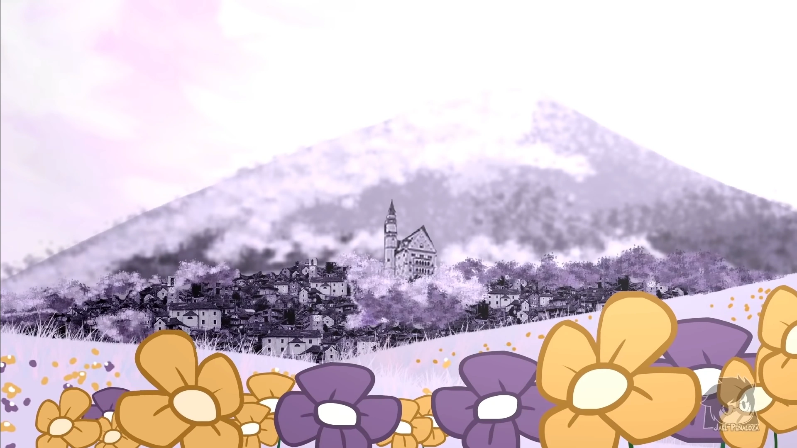

Underverse tem uma forte ligação com uma outra criação de Jael, Xtale(comic ou filme), que conta o passado de vários protagoniastas e conceitos mostrados durante a série, mostrando o que aconteceu antes dos enormes problemas por todo o multiverso e suas concequencias. Além disso, a série tem ligação com outra tirinha chamada "the truce", onde se fala sobre um importante acordo entre Ink e Error, sem mais criação, sem mais destruição...
Tudo começa com Sans, o original que vivia
em uma linha de tempo pacifista se deparando com um lugar vazio,
onde havia apenas um ser dentro deste vasto lugar em branco. Esse ser eram dois personagens na
realidade,Cross e X!Chara, que no momento dividiam o mesmo
corpo. Após uma pequena conversa, Sans tem metade
se sua alma roubada por Chara, que posteriormente seria absorvida por Cross.Em uma tentativa de solucionar e
conter esse problema, Ink aparece para
devolver a meia alma para seu "dono" novamente, mas falha quando os
dois acabam fugindo. É ali a partir dali que tudo toma origem.
Ink e Sans partem em uma missão para
recuperar a alma roubada juntamente com a tentativa de conter Cross, que faz um "contrato" com Nightmare ,e agora está espalhando
negatividade pelos os univeros enquanto também tenta reconstruir sua própria AU ao roubar códigos ao redor
do
multiverso.
Muitas coisas vão acontecendo
durantes essas aventuras, lutas, formações de novos aliados e
amizades, o descobrimento de conflitos e traidores...A primeira temporada acaba com a revelação
de um novo
vilão, aquele que estáva por trás de tudo desde o ínicio, chamado de X!Gaster, que tem sua alma liberta por
Ink, ao trair seu grupo de amigos por promessas e novas oportunidades para explorar a criação ao seu limite,
chamado de "Evento-X". Fora a infeliz
destruição imediata de todos os universos alternativos após Error
acreditar ter tido seu acordo quebrado por esse tal de Evento-X.
Ainda em fase de desenvolvimento, a segunda temporada de Underverse irá nos mostrar o que aconteceu com o
multiverso após a destruição total de seus universos e como o Evento-X irá afetar os restantes do universos
original e suas linhas do tempo.
Lutas muito mais emocionantes, personagens trocam de lado
repensando sobre suas morais e em quem acreditar, discussões sobre o que fazer para parar X!Gaster e seus peões sem
trazer mais danos e perdas, enquanto ainda tem que lidar com o controle do equilíbrio da positividade e
negatividade que ainda restam por aí.